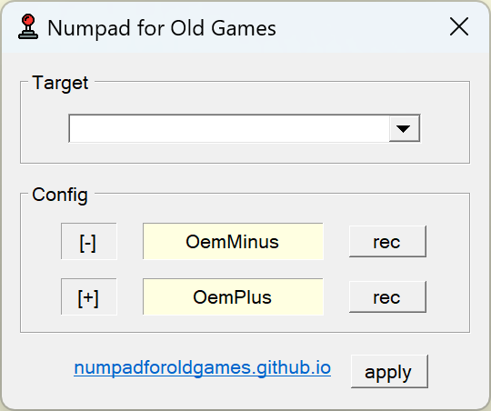

Numpad for Old Games
Software that binds numkeys ['+', '-'] used in old games
📥 NfOD_v1.0.0 (39kb)
Screenshots

Requirements (minimum)
Windows 7 with .Net Framework 4.7
Instruction
1. Run the game
2. Minimize the game
3. Run this program
4. Select the game process
5. Click "apply"
[Note]
the assigned key in the program loses its functionality in the game